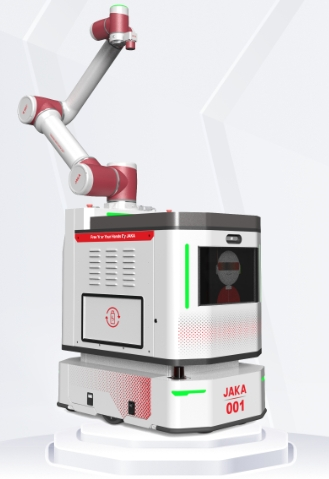
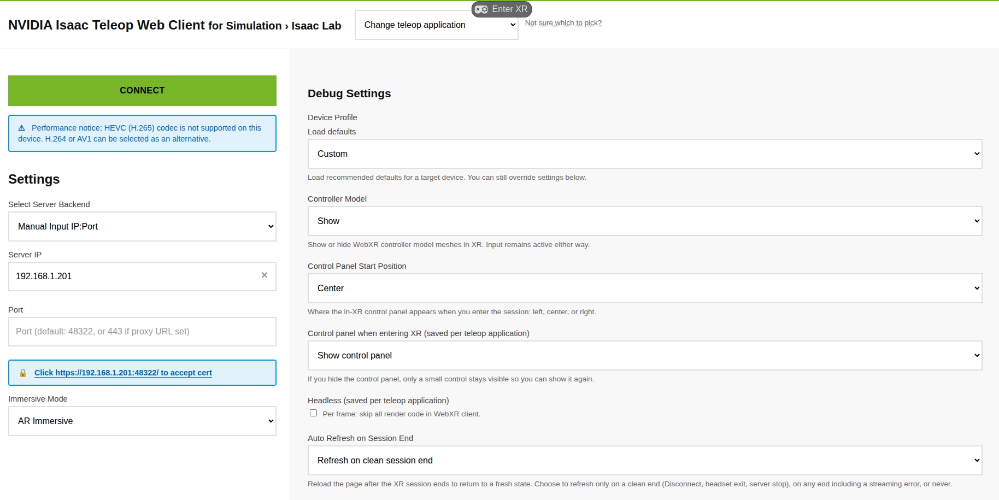

先把方向对上，
再开始采集。
这页给现场操作者用。启动 CloudXR，确认 JAKA 坐标和站位，用 A 管回合，用短按 B 或 Space 暂停，再到 Rerun 看画面和曲线。方向、延迟、抖动或相机超时出现时，照着页面停下来处理。

每个回合照这 4 步走
顺序固定下来，现场就少一个变量。先让设备可控，再让它写帧，机械臂运动时不要改参数。
先清场
清空工作区，确认急停、负载、碰撞等级和相机都处于可用状态。
确认 READY
站到机器人侧后方，看一眼面板。位置不合适时长按 B 复位。
按 A 开始
按 A 后才会写入数据。A 再按一次结束，B 短按或 Space 可以暂停。
检查这一回合
在 Rerun 里确认相机、Episode、关节和夹爪曲线，再决定是否保留。
启动后先别急着动
下面四项都确认，再做第一组小动作。哪一项拿不准，就停在 READY 继续查。
- ✓工作区与安全清掉工作区内的物体，确认 A5 负载、碰撞等级、tool frame、user frame 和急停设置。
- ✓坐标和站位JAKA `+X` 向右、`+Y` 向前、`+Z` 向上，使用 `user_frame_id=0`。操作者站在机器人侧后方，与机器人同向。
- ✓头显与手柄CloudXR 页面已连接，头显和右手柄姿态有效。第一次 squeeze 前站稳，面向自己认定的工作前方。
- ✓相机与 RerunRealSense 序列号、分辨率和 FPS 对得上。要看在线曲线时，再确认 Rerun viewer 已连接。
uv run python -m examples.isaac_teleop_to_jaka.record \
--robot.type=jaka_robot \
--robot.ip=192.168.1.31 \
--robot.id=jaka_arm \
--robot.user_frame_id=0 \
--teleop.type=xr_controller \
--teleop.use_head_yaw=true \
--teleop.lock_pose=true \
--dataset.repo_id="sorel/pick-cube" \
--dataset.fps=30 \
--dataset.num_episodes=3 \
--rerun_url="rerun+http://127.0.0.1:9876/proxy"
在头显里完成 XR 连接
头显里只做连接，不在这里改机器人参数。按图完成证书、CONNECT 和 Enter XR，图中的 IP 仅作示例，现场以终端输出为准。

12345确认头显和工作站在同一可达网络，再核对终端打印的 IP 与 `48322` 证书地址。
手柄负责动作，键盘负责兜底
手柄用于连续遥操，键盘保留为备用和退出通道。面板状态要和你的动作一致，LOOP 接近 30 Hz 再继续采集。
| 输入 | 动作 | 面板反馈 |
|---|---|---|
| A a / n / → | 开始或结束当前回合 | READY / RECORDING |
| B 短按 Space | 暂停或恢复当前回合 | PAUSE / RECORDING |
| B 长按 b | 执行 `reset_joints` 复位 | RESETTING |
| squeeze | 按住后接合 TCP 控制，松开后保持当前目标 | ENGAGED / HOLD |
| trigger | 每次按下切换夹爪目标 | gripper |
| 摇杆 | 上下调 pitch，左右调 yaw，按住摇杆再左右调 roll | LOCK_POSE 基准 |
| r / ← | 放弃当前回合并回到等待状态 | READY |
| Esc / q | 停止采集并释放硬件 | 安全停止 |
还没有写入当前回合。先确认站位和方向，再按 A。
正在写入数据。A 结束回合，B 短按或 Space 暂停，暂停时间不计入回合时长。
回合保留，当前不写帧。再次短按 B 或 Space 继续，机械臂控制仍保持运行。
B 长按触发。Servo 关闭后用 `send_action(..., use_servo=false)` 执行复位。
Esc/q 停止程序并释放硬件。需要停住 TCP 时先松开 squeeze。
先用小动作把方向对上
第一次接合只做三笔小动作。每次都看 TCP 是否跟手柄同向，方向不对就立刻松开 squeeze。
JAKA base frame
`use_head_yaw=true` 时，每次 squeeze 接合只锁存一次头显水平 yaw。接合后转头不会让 TCP 漂移。
采完先在 Rerun 看一眼
Viewer 里每个回合单独显示。相机顶部有 Episode 和 RECORDING/PAUSE，底部是任务文字，下面是关节与夹爪曲线。
- Episode 号和当前回合一致，帧序从 0 开始增长。
- 暂停时画面显示 PAUSE，恢复后显示 RECORDING，暂停区间不写入数据集。
- 相机画面连续，顶部 Episode 标签在正中央。
- `joint_1.pos ... joint_6.pos` 曲线没有明显断裂。
- `gripper.pos` 在每次 trigger 后都保持正确目标值。
- LOOP 接近 30 Hz，`CAM TIMEOUT` 没有持续增加。
方向反了、TCP 漂移、夹爪跳变或 `CAM TIMEOUT` 持续增加时，松开 squeeze，再按 Esc/q。记下现象和当时的面板状态，处理完再继续。
收尾时按顺序做
A 结束当前回合，Esc/q 结束整次采集。给设备和数据集留出正常收尾时间。
结束当前回合
再次按 A，面板回到 READY，程序保存当前 episode。PAUSE 状态也用 A 结束。
准备下一回合
位置不合适时长按 B，等 RESETTING 完成并回到 READY 后再开始。
正常退出
Esc/q 会停止程序，释放 XR 和硬件，并刷新 Rerun 队列。
核对文件
确认 dataset、视频、control trace 和 Rerun recording 都能找到。